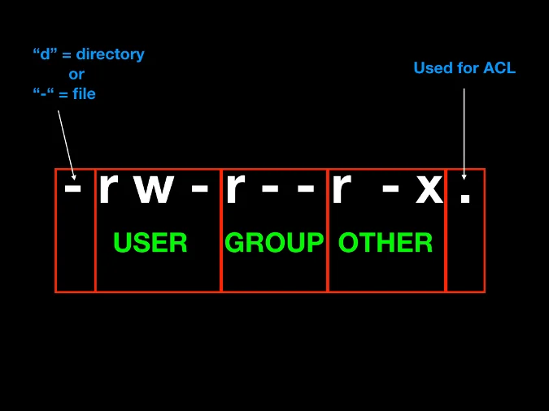
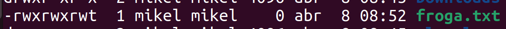
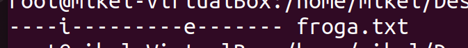
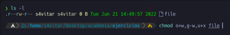
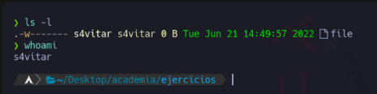

Fitxategi eta direkotorioen baimenak hurrengo aginduarekin ikusi ditzakegu.
ls -al

Bai, hemen dituzu eskatutako informazioa Linuxen baimen motak eta chmod komandoaren erabilera buruz:
Linuxen, fitxategi eta karpeta batzuek hiru baimen mota dituzte: irakurketa (r), idazketa (w) eta exekuzioa (x). Baimen hauek hiru entitateetara aplika daitezke: fitxategiaren jabea, fitxategiak pertenitzen dion taldea eta beste erabiltzaileak.
chmod komandoa fitxategi eta karpetaen baimenak aldatzeko erabiltzen da Linuxen. Hemen duzu nola erabiliaren adibide bat:
chmod baimenak fitxategia_edo_karpeta
Non "baimenak" diren baimenak ordezkatzen dituzten letrak edo zenbakiak eta "fitxategia_edo_karpeta" fitxategi edo karpeta izena den.
Adibidez, jabeari (user) exekuzio baimena horrela eman ahal diogu.
chmod u+x froga.txt
Honela, taldeari eta besteei exekuzio eta idazteko baimenak emago dizkiegu.
chmod go+wx froga.txt
Besteei, irakurtzeko baimena horrela kendu diezaiokegu.
chmod o-r froga.txt
Adibidez baimen guztiak kentzeko
chmod 000 froga.txt
Baimen guztiak gehitzeko
chmod 777 froga.txt
Erabiltzaileari baimen guztiak emateko eta besteei edo taldekiedei irakurtze eta exekuzio baimenak emateko.
chmod 755 froga.txt
Sticky bita daukan fitxategi edo direktorio bat bakarrik jabea edo rootek aldatu ahal dio izena edo ezabatu ahal du.
Stiky bita gehitzeko
chmod +t froga.txt

SUID aktibatuta dagoenean fitxategi hau exekutatzen duen erabiltzaileak sortazailearen baimenak izango ditu.
chmod u+s froga.txt
Sortu exekutable bat root bezala, hurrengo edukiarekin eta izenarekin.
#!/bin/bash
echo erabiltzailea
id
echo exekuzio baimen erabiltzailea
echo $EUID
Baimenak esleituko dizkiogu fitxategiari
chmod 755 suidfroga.sh
Ezarri SUID suidfroga.sh fitxategiari

chmod u+s suidfroga.sh
chmod 4755 suidfroga.sh

Ezaugarri bereziak ikusteko lsattr agindua erabiliko dugu.
Ezaugarri bereziak aldatzeko chattr agindua erabiliko dugu.
chattr +i froga.txt
lsattr froga.txt

chattr +u froga.txt
chattr +e froga.txt
chattr +c froga.txt
chattr +a froga.txt
lotu dagokion baimenarekin:
462
123
711
333
161
765
567
101
162
rwx--x--x
--x-w--wx
--x-----x
-wx-wx-wx
r-xrw-rwx
rwxrw-r-x
--xrw--w-
r--rw--w-
--xrw---x
Zein da fitxategi honen baimenen baimena modu oktalean?

Jarri hurrengo baimenak modu oktalean
Zer gertatuko da hurrengo agindua exekutatzerakoan?
'Whoami' komandoaren output-a file fitxategian gordeko da, fitxategiaren jabea izateagatik baimenek ez baitidate eragiten
'Whoami' komandoaren output-a ezin izango da file fitxategian gorde, jabea izan arren, fitxategian esleitutako baimena gailentzen delako
Nola lortuko zenuke "file" artxiboaren baimenak ikusten den moduan aldatzeko?

Zortzitarrean zer baimen esleitu beharko dut artxiboak adierazitako baimenak izan ditzan lortzeko?

Honako baimen hauek konfiguratuta dituen fitxategi hau ezabatu ahal izango dut?
